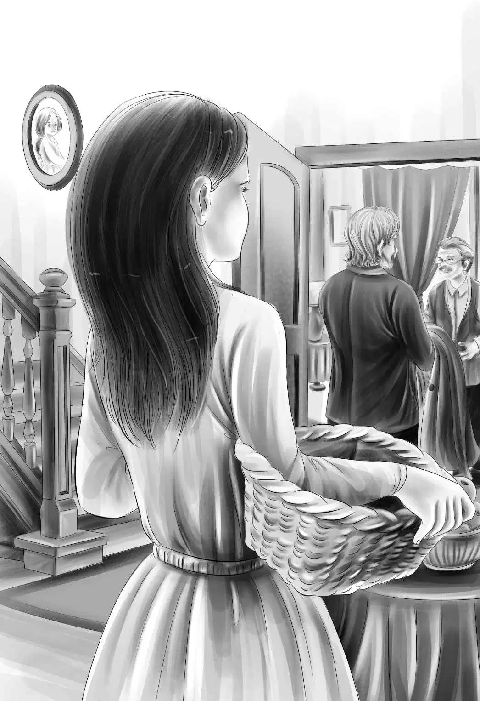

One winter day Jessie Alden met her brother Henry in the hall.
She said,"Henry,I think Grandfather is up to something. Violet thinks so,too."
"What do you mean,Jessie?"said Henry."Do you mean business trouble?"
"Oh,no! Not at all!" said Jessie. "I think he is planning something. He jokes with Benny all the time. And he smiles to himself when he thinks no one is looking."
Henry said,"I hope he is happy. What else have you noticed?"
"Last night Grandfather was at the telephone in the hall. When I came down the stairs,he stopped talking suddenly.
"Then the other day a strange man came to see him. He was a very big,strong man. I could hear his deep voice.He laughed all the time. Jolly,you know. Grandfather laughed a lot,too," said Jessie.
"Maybe you are right," said Henry. "I'll keep my eyes open,too. He will tell us if there is anything he wants us to know."
Henry did watch his grandfather after that. It was true. Mr. Alden seemed very happy. Once he started to say something. Then he stopped.
Then at last,one day in January,the same man came to call. Mr.Alden took him into the front room and shut the door. He took the stranger's hat and coat and hung them up. He gave him an easy chair.

The four Aldens would have been surprised to hear what their grandfather then had to say to the stranger.
He said,"My grandchildren love to see new places. They love adventure. They love boats. Henry is the oldest,and he and Jessie go to high school. Violet comes next and Benny is the youngest."
The man smiled."So they all like adventure!" he said.
"Yes,but best of all,they like to make something of nothing. Do you understand what I mean?"
"Yes,sir! I understand very well,Mr. Alden. I understand because I am just like that,too! I like to make a fine fish pole out of a stick,a string,and a bent pin. I like to make a plate out of a flat stone."
"That's exactly right, Lars! " cried Mr. Alden. "You do understand."
Lars thought for a minute. Then he went on. "I think you want your grandchildren to have an exciting time,but you don't want them in any real danger."
"Right again!"said Mr.Alden."Shake hands,Lars!And now I'll call them.You can watch them when I tell them!"
Mr. Alden opened the door and shouted,"Benny! Get Henry and Jessie and Violet. All of you come down. I want to tell you something."
The four Aldens were soon in the front room.
"Jessie,Violet,Henry,and Benny,this is Lars Larson,"said Mr. Alden smiling. "He is your friend from now on."
Lars shook hands with them all. He said,patting the dog,as everyone else sat down, "And this is Watch. I know him,too."
Grandfather said, "Now I am going to tell you about a plan."
"I told you Grandfather was up to something," said Jessie.
"Did you,my dear?"said Mr. Alden. "Well,we are all going on a trip. Lars is going with us. He has already been where we want to go so he can tell us all about it."
"How are we going on the trip?"asked Benny. "On a plane? On a ship?"
"Both,"said Mr. Alden smiling.
"And where?"asked Benny.
"We are going to an island in the South Seas," said his grandfather.
"Oh,boy!"cried Benny.
"I'll tell you all about it,"said Mr. Alden. "I have to go to San Francisco on business and I thought it would be fun for you to go with me. Then suddenly one of my business friends said his company's ship was going to Tahiti about that time,and did we want to go along?We would be the only passengers. So I said yes."
"So we are going to Tahiti!" said Henry.
"No," said Grandfather. "My friend told me about his first mate,Lars Larson.
"Three years ago,Lars was shipwrecked on a beautiful island in the South Seas. The ship hit a reef and two men were lost. One of them was Lars."
"He doesn't look lost," said Benny.
"No,the two men landed on this beautiful island in a lifeboat. The others were picked up by other ships. Lars and the other man lived on the island until a ship came and picked them up,too.
"Lars has told me all about the beautiful island. It is very safe,for nobody lives there. There are no dangerous animals. There is water,enough food to live on,and Lars would Like to go there again for a vacation."
"And we're going to this island?" asked Violet softly.
"Right!" said Mr. Alden. "The Tahiti ship will take us there,and come and get us on the way back."
"Oh,what a wonderful idea!" cried Jessie. "We do love to see new places!"
"And we love ships!" said Henry. "You knew that,Grandfather."
"Yes,and who else do you think is going?" asked Mr. Alden with a laugh.
"I don't know," said Jessie,laughing too. "We never could guess."
"Mike!" said Grandfather.
"Mike!" yelled Benny. "Oh,boy! My old friend,Mike Wood. I would like that best of anything in the world. Mike and I could have a neat time. We're just the same age!"
Henry said,"This is such a grand surprise. You say we are going to fly?"
"Yes,we will fly from here in New England to Chicago. We will pick up Mike there,and go on to San Francisco. Then we will take the ship."
"But what about school?" asked Henry.
Benny shouted,"Oh,we stay out of school! That will be cool! You can tell our teachers that we are going to the South Seas,Grandfather."
Henry said,"Everyone in your school will know about the South Seas in just one day,Ben."
Mr. Alden laughed too. He said,"Let me tell you about school. I began this plan a long time ago. I talked with your teachers. They gave me all your lessons until you come back."
"Do we have new schoolbooks?"asked Jessie.
Mr. Alden smiled and said,"Yes,the books are right on the table."
He gave each one a paper book. Henry's was dark green,with HENRY on the cover in gold. There was a violet book with VIOLET on the cover,a blue one for Jessie,and a bright red one for Benny.
"Better not look at them now," said Mr. Alden. "They are very interesting. Every day on the boat you will study these books."
"A Boat School,Benny," said Jessie. She was afraid Benny would not like this.
"A Boat School!" cried Benny. "That will be fun,but we won't have school on the island,will we,Lars?"
"There will be no time,my lad," said Lars. "You'll be busy finding something to eat. That will be school enough. How about a lesson right now? A boat is not a ship. A boat can be carried on a ship. Our ship is too big to be carried by another."
"Oh,I get it," said Benny. "Then we'll call the school a Ship School."
"Almost,Benny," said Lars. "A sailor would say,Ship's School."
"That's neat,"said Benny,"Ship's School!"
"Is the island beautiful,Lars?" asked Jessie. "Palm trees and everything?"
"Oh,yes," said Lars. "That's why I want to see it again. I'm glad to spend my vacation there with you. We can go fishing,too."
"Fishing!" said Henry. "Ben and I love to fish."
"And Mike. Mike loves to fish,too," said Benny. "Good old Mike! I can't wait to see him. Grandfather you know it's awfully hard for me to wait for anything. When are we going?"
"Next week," said Mr. Alden laughing. "I know you can't ever wait. So that's why I didn't tell you before."
"We'll have to pack soon," said Jessie.
"No,that's another thing," said Mr. Alden. He looked at Jessie,the perfect housekeeper. "You see you will need other clothes for the ship,and still others for the island. It is very hot there. So your Cousin Alice packed your summer clothes and they have gone already. You will find them on the ship."
"What a grandfather!" said Henry.
"Can Watch go?" asked Benny.
"Sorry,my boy. Let me tell you about Watch," began Mr. Alden.
"And now I know he can't," said Benny.
"No,he can't,"said Mr.Alden."Watch wouldn't like the plane,or the boat,or the island,really. Mr. and Mrs. McGregor need a watchdog and we don't. Mike can't take Spot either."
"That's good," said Benny. "No dogs at all. You can't go,Watch."
"Watch has gone to sleep on my foot," said Lars.
"That means he likes you," said Jessie.
"I'm glad of that," said Lars. Watch lifted his head. Lars patted him and said,"Goodby. I have to go now,Watch."
"Yes,Lars has work to do," said Grandfather. "We will meet again in San Francisco."
They were all sorry to see Lars go. He was already a good friend.
When Lars had gone,Henry looked at Jessie and Violet and said,"Aren't we lucky to have a grandfather who takes us on a trip,and helps us go to school just the same?"
Jessie smiled at her brother. She said,"I was thinking the same thing. What a lot of surprises Grandfather thinks of!"
But nobody knew then what the biggest surprise was going to be.
Not even Grandfather. Not even Lars.